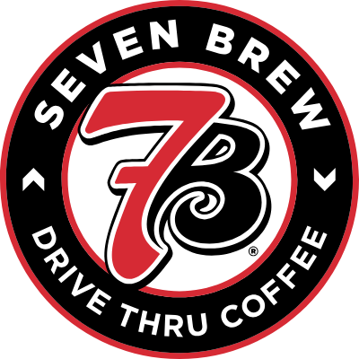

7 Brew Coffee Calories &
Nutrition Calculator
Use our interactive 7 Brew calorie calculator to customize your favorite drinks. Track calories, sugar, fat and protein for the Blondie, Brunette, Smooth 7, and energy drink custom orders in real-time.
Build your order

Results are estimates based on common brand menu nutrition data. Location recipes and portions may vary.
7 Brew Coffee Nutrition & Macro Tracking Guide
7 Brew is redefining drive-thru coffee with its fast service, energetic atmosphere, and a massive menu of custom-crafted drinks. Famous for its "Original 7" espresso classics and energy mixes, 7 Brew drinks can contain anywhere from 5 calories to over 600 calories. Because they offer total customizability of milks, syrups, and sizes, tracking your calorie intake is crucial. Our independent 7 Brew calorie calculator updates your nutritional facts instantly. Compare drink macros across cafés with our Starbucks Calorie Calculator or our Dunkin' Calorie Calculator.
How to Use the 7 Brew Calorie Calculator
Build your favorite drive-thru pick-me-up and check the nutrition metrics instantly:
- Choose Your Brew: Start with standard coffee, tea, or one of the Original 7 like the Blondie or Brunette.
- Pick Your Size: See the macro difference between Small (16 oz), Medium (24 oz), and Large (32 oz) cups.
- Select Your Milk & Syrups: Swap whole milk for skim or plant-based milks, or choose sugar-free syrups to keep your carbohydrates under control.
Original 7 & Popular Drinks Macros Reference
Check out the estimated nutritional values for standard Medium (24 oz) 7 Brew drinks made with whole milk:
| Drink Name | Calories | Protein | Carbs | Fat |
|---|---|---|---|---|
| The Blondie (Caramel Blondie) | 480 | 12g | 58g | 22g |
| The Brunette (Hazelnut Mocha) | 510 | 12g | 68g | 21g |
| Smooth 7 (Irish Cream Breve) | 540 | 10g | 52g | 32g |
| White Mac (White Chocolate & Macadamia) | 490 | 11g | 60g | 23g |
| Cinnamon Roll (Brown Sugar & Cinnamon) | 470 | 12g | 55g | 22g |
| Seven Energy (Original Energy Blend) | 160 | 0g | 40g | 0g |
Healthy Customization Tips at 7 Brew
You can enjoy the drive-thru experience without derailing your diet. Use these smart strategies:
Go Sugar-Free (SF)
7 Brew offers sugar-free options for almost all of their syrups, including caramel, chocolate, Irish cream, and vanilla. Swapping standard syrup for sugar-free versions can save you 100 to 200 calories per drink and cut out up to 40g of sugar.
Breve vs. Standard Milk
Many of the Original 7 drinks are served as "breve" (made with half-and-half cream) which makes them incredibly creamy but triples the fat and calorie content. Swapping half-and-half for almond milk or coconut milk can slash your drink's fat content by 80%.
Watch the Energy Mixes
A Large Seven Energy drink contains a significant amount of sugar (up to 80g). Switch to Sugar-Free Seven Energy with sugar-free flavor syrups to get the same caffeine boost for under 20 calories.
Frequently Asked Questions (FAQs)
What is in a "Smooth 7"?
The Smooth 7 is one of 7 Brew's signature drinks. It is a breve (espresso and half-and-half) flavored with white chocolate and Irish cream syrups. A standard medium contains about 540 calories.
How many calories are in a sugar-free 7 Brew drink?
If you order an iced coffee or cold brew with sugar-free syrup and almond milk, it can be as low as 30-50 calories. Even signature drinks ordered "sugar-free" are significantly lighter.
What milk alternatives does 7 Brew offer?
7 Brew offers whole milk, half-and-half (breve), oat milk, almond milk, and coconut milk to suit all lifestyles and dietary preferences.
Does 7 Brew have keto-friendly drinks?
Yes. Ordering an unsweetened Americano, Cold Brew, or Hot Tea with a splash of heavy cream and sugar-free syrup provides a delicious, high-fat, low-carb keto option.
Drive-thru Energy.
Clear information.
This 7 Brew calorie calculator helps you quickly check the nutrition of drive-thru classics. Select an Original 7 favorite, adjust cup sizes, and see how milk swaps and sugar-free options affect your macros.
Actual values can vary depending on local beverage preparation and menu changes. Check 7 Brew's official website for exact current allergen and nutrition information.
7 Brew
questions.
What is the lowest calorie drink at 7 Brew?+
Unsweetened black coffee, cold brew, and hot teas contain less than 5 calories per cup before milk or sugar are added.
How many calories are in the Seven Energy?+
A standard medium Seven Energy contains 160 calories (all from carbs/sugar). The Sugar-Free Seven Energy option contains 0 calories.
Is this an official 7 Brew tool?+
No. NutriRoute is independent and is not affiliated with 7 Brew Coffee. This page is for information only.